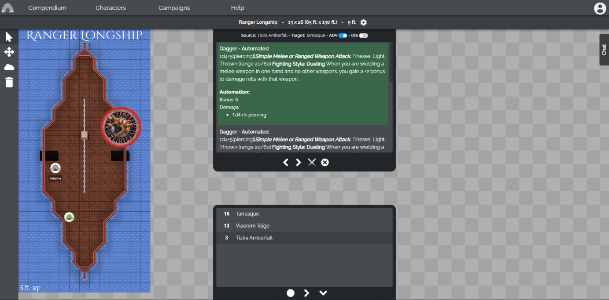
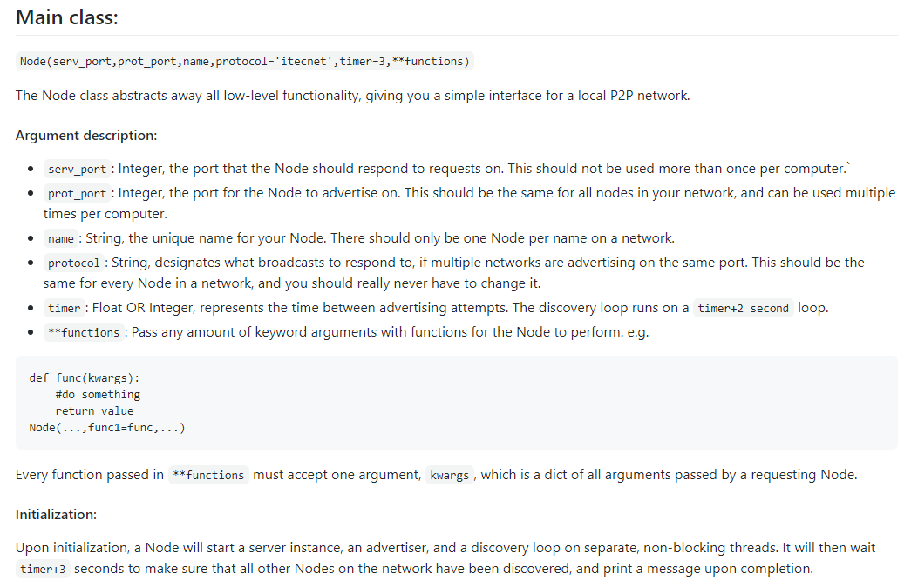
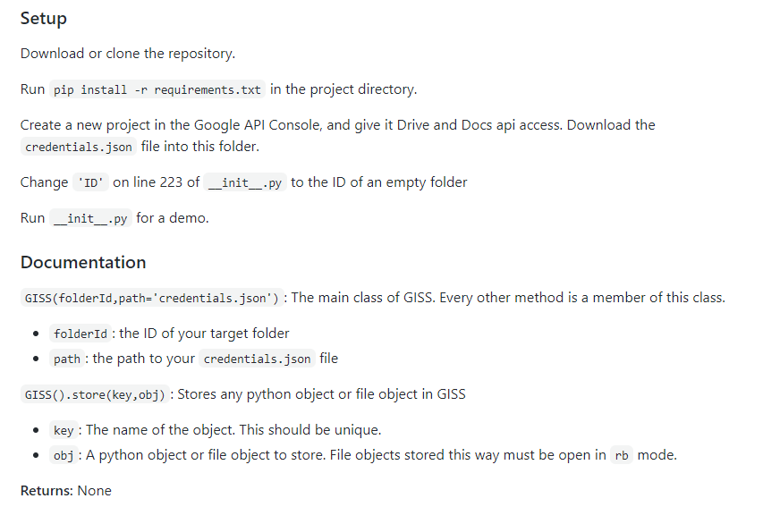

Curated Open-Source Project Directory
- Matteo Harris - GitHub Profile
Xorien's Lair (XL3)
Xorien's Lair is a Virtual Table Top (VTT) for Dungeons & Dragons Fifth Edition programmed in Python and HTML/CSS/JS.
p2p-Local
p2p-Local is a python library for creating full or partial mesh networks over local connections, using UDP Broadcasting and the XMLRPC protocol.
GISS
GISS, or the Google Infinite Storage Solution, is a proof-of-concept Python library that can store any file as a Google Doc to take advantage of Google Drive's unlimited Docs storage.
Roh 3.0
Roh is a simple chatbot written in Python that can slowly learn over time based on replies from users. It works as a library, but is best used as a Discord bot or similar.
Xorien's Lair 3
Xorien's Lair is the third iteration of a Virtual Tabletop system for D&D 5e written in Python and HTML/CSS/JS. The version listed here is the final prototype before a production-ready version is attempted, which is currently underway as XL4. The system uses a REST API backend for calling various functions and interacting with other users. Currently, the prototype system offers a character importer and editor, a campaign manager, a rules and content compendium, and of course the virtual tabletop itself.

p2p-Local
p2p-Local is a compact Python library that can be used to create either fully-connected or partially-connected mesh networks within a LAN, allowing multiple devices to communicate directly with eachother without needing any kind of central server. The network needs no central node, as each node advertises itself to new nodes through a UDP broadcast packet system. Once nodes are connected to the network, they can call functions on eachother via the XMLRPC protocol. The library also implements a method to create different channels on one LAN, allowing mutliple meshes to work without interfering with one another.

GISS
GISS, or the Google Infinite Storage Solution, is a proof-of-concept Python library that allows a Python program to store objects and files as Google Docs files in order to take advantage of Google Drive's unlimited Docs storage. While this is fairly inefficient in practice, it is still fully functional. It stores the data of uploaded files as base64-encoded strings in one or more Docs files. Each file is indexed in a registry file, and it is possible to store entire file trees and then retrieve them without much extra programming.

Roh 3.0
Roh 3.0 is the third iteration of a keyword-based chatbot written in Python. It generally starts with a base dataset, then can add to its own keyword dataset based on conversations it has. It can act as a Python library, and currently runs within a Discord bot on several Discord servers I'm a part of. Its "memory" is stored within a JSON file, which allows it to produce a response in under a second from a file many megabytes or gigabytes in size.
The image to the right is a short sample of one of the conversations one of Roh's users had with it.
The image to the right is a short sample of one of the conversations one of Roh's users had with it.